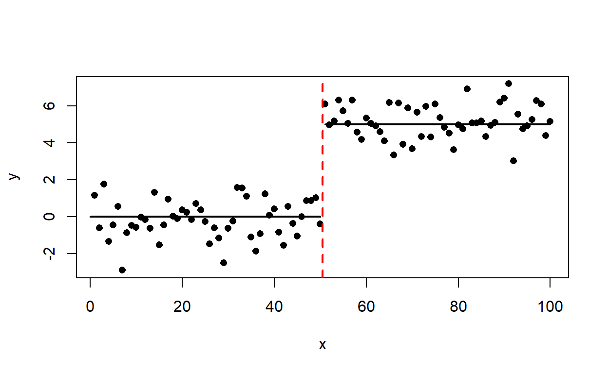

Week 9: Modern regression models
ANTH 674: Research Design and Analysis in Anthropology
Professor Andrew Du
Introduction
This week’s short lecture went over modern regression models, a “grab bag” name I gave to more advanced models that relax the assumptions of general linear models (GLM). The two main assumptions that are relaxed for the models I covered are:
- The independent variable (IV) is measured without error
- The relationship between the dependent variable (DV) and IV is linear.
For relaxing Assumption 1, we went over Model II regression methods. For relaxing Assumption 2, we learned segmented regression, non-linear least squares, and locally estimated scatterplot smoothing. You will learn how to run all these models in R, and in doing so, you will learn more about how these methods work.

Goals for this tutorial
1) Continue the never-ending journey of familiarizing yourself with R.
2) Learn when and how to use:
a. Model II regression
b. Segmented regression
c. Non-linear least squares
d. Locally estimated scatterplot smoothing
Model II regression
GLMs assume that the IV is measured without error. More precisely, “without error” refers to the fact that the IV was controlled and manipulated experimentally and was not randomly sampled from some larger population (this is similar to the idea of random effects, which we will learn about in a future lecture). Thus, it is almost certain that this GLM assumption is violated for non-experimental research. Moreover, it is sometimes not clear which of your two variables should be the IV or DV. This knowledge is necessary for specifying your GLM model and for interpreting the slope(s).
In these scenarios, one can turn to Model II regression methods. Whereas Model I regressions estimate coefficients by minimizing the errors in the DV only (e.g., least squares), Model II regressions minimize errors in both the IV and DV. We will cover two Model II regressions here: major axis regression (MA) and standard major axis regression (SMA). SMA is also often called reduced major axis regression (RMA), not to be confused with ranged major axis regression which is also abbreviated RMA (aren’t statisticians the worst?). I will use reduced major axis regression and RMA to refer to SMA because this is the name commonly used in biological anthropology.

Major axis regression (MA)
MA estimates coefficients by minimizing the errors perpendicular to the line of best fit (see above figure). This is exactly how principal components analysis fits the first component through the axis of greatest variation in the data, i.e., the major axis, hence the name for MA. One of the assumptions of MA is that the IV and DV are measured in the same units or are both dimensionless. This is a pretty major assumption, and if it is not met, one should use RMA.
Reduced major axis regression (RMA)
RMA estimates coefficients by minimizing the geometric mean distance between the data and best-fit line, and this is the same as minimizing the area of all triangles in the figure above. RMA can be done on IV and DV in different units because it is really MA done on standardized variables, hence the name standard major axis regression (though we will stick with using “RMA”).
Fitting Model II regressions in R
As one can guess, MA and RMA can easily be done in R using the
lmodel2() function in the lmodel2 package
(make sure this package is installed). Let’s fit Model II regressions to
iris$Petal.Length as a function of
iris$Sepal.Length. Read the lmodel2() help
file to see if you can figure out how to use the function, and try it
out in the console below.
# Click "Solution" button if stucklibrary(lmodel2)
lm2.res <- lmodel2(Petal.Length ~ Sepal.Length, data = iris, nperm = 1000)
sd(iris$Petal.Length) / sd(iris$Sepal.Length)
res <- lm2.res$regression.results
res[res$Method == "OLS", "Slope"] / cor(iris$Petal.Length, iris$Sepal.Length)You can see that lmodel2() returns the intercept and
slope, along with their 95% confidence intervals (CIs), for ordinary
least squares (OLS), major axis regression (MA), and reduced major axis
regression (here, abbreviated SMA). If we want P-values for each
estimated coefficient, this is done using Monte Carlo methods, and the
number of iterations must be chosen using the nperm
argument. Try that out, using 1000 iterations.
The RMA slope is just the standard deviation of the DV divided by
that of the IV. Perform this calculation, and see if it matches the
slope from lmodel2(). The RMA slope is also the OLS slope
divided by the magnitude of the Pearson correlation coefficient. Try
that out above. And because the magnitude of the correlation coefficient
is almost always less than one, the magnitude of the RMA slope will
almost always be larger than that for OLS.
Finally, let’s add an RMA line to the scatter plot of
Petal.Length ~ Sepal.Length. First, create the scatter
plot. Now, we use the abline() function, wherein the first
and second arguments are the intercept and slope, respectively. In fact,
go ahead and add an OLS line too, and compare it to that for RMA.
# Click "Solution" button if stucklibrary(lmodel2)
plot(Petal.Length ~ Sepal.Length, data = iris)
lm2.res <- lmodel2(Petal.Length ~ Sepal.Length, data = iris)
res <- lm2.res$regression.results
abline(
res$Intercept[res$Method == "SMA"],
res$Slope[res$Method == "SMA"],
col = "blue")
abline(
res$Intercept[res$Method == "OLS"],
res$Slope[res$Method == "OLS"],
col = "red")If you plan on using Model II regressions for your research, this is a great resource.
Segmented regression
One uses segmented regression when the relationship between the DV and IV isn’t a simple linear one and is instead composed of at least two linear segments. This might happen if there is some threshold effect and the relationship between the DV and IV changes once some IV value is reached. Or, one might see this in time series data, where the rate of change in the DV changes after a certain time period due to some external event (e.g., see figure below). I’ve seen segmented regression also referred to as piecewise regression, breakpoint regression, and change point regression. I’m sure there are more names out there for this model.

Linear segments are separated by an estimated breakpoint. Thus, a segmented regression with one breakpoint would have two linear regression segments, each one needing an estimated intercept and slope. But, if the segments are joined together end-to-end (see above figure), as they are assumed to be in the R package we will use, the intercept of the second linear segment can be computed from the first segment’s intercept, slope, and the estimated breakpoint (you can see in the figure above that the second linear segment’s intecept is just where the first segment meets the breakpoint). Thus, we do not need to separately estimate an intercept for the second segment. Calling the number of estimated breakpoints \(n\), the total number of estimated coefficients for a segmented regression is \(2n + 2\). These coefficients are estimated algorithmically using maximum likelihood estimation.
Fitting a segmented regression with different intercepts and slopes
Let’s fit a segmented regression using the segmented
function in the segmented package (make sure this package
is installed). We will analyze the Mammals dataset from the
quantreg package. I’ve loaded the data frame for you in the
console below. We will analyze speed as a function of
weight, but feel free to look at the ?Mammals
help file for more details.
First, let’s create a new column, wherein weight is
log10-transformed:
Mammals$logWeight <- log10(Mammals$weight). The
segmented() function requires that we first fit a linear
model to the data using lm(). If we are estimating one
breakpoint only, the segmented() function requires only one
argument: the lm() object. If more breakpoints are
required, one can specify how many using the npsi argument.
Now you are ready to fit a segmented regression with one breakpoint to
speed ~ logWeight. Do this below.
# Click "Solution" button if stucklibrary(segmented)
Mammals$logWeight=log10(Mammals$weight)
lm.res <- lm(speed ~ logWeight, data = Mammals)
seg.res <- segmented(lm.res)
summary(seg.res)
slope(seg.res)
intercept(seg.res)
ci.seg <- confint(seg.res)
plot(speed ~ logWeight, data = Mammals)
plot(seg.res, add = TRUE, col = "red", lwd = 3)
abline(v = ci.seg[,"Est."], col = "blue", lty = 2, lwd = 3)
abline(v = ci.seg[,c("CI(95%).low", "CI(95%).up")], col = "blue", lty = 4, lwd = 2)If you print out the results, you can see the estimated coefficients:
(Intercept) and logWeight are the intercept
and slope for the first segment, U1.logWeight is the
difference in slopes between the first and second segment, and
psi1.logWeight is the estimated breakpoint. Use
summary() on the segmented regression object to also get
standard errors and P-values. One can also use the slope()
function to get the slope estimate for each segment, along with standard
errors and 95% CIs. Use the intercept() function to get the
intercept estimate for each segment. Use confint() to get
95% CI for the estimated breakpoint.
To plot the segmented regression results, first create a scatter plot
of the DV and IV. Then plot the segmented regression object using
plot() with argument add = TRUE. One can also
add vertical lines using abline() and the v
argument to indicate the estimated breakpoint and its 95% CI.
Fitting a segmented regression with different intercepts only
One can also fit a segmented regression where only the intercept changes and the slopes equal zero. The number of estimated coefficients here is \(2n + 1\), where \(n\) is the number of estimated breakpoints.

To fit this model, we will use the strucchange package
(make sure it’s installed) and the Nile dataset built into
R. First, plot the time series dataset with plot(Nile).
Now, let’s fit an intercept-only breakpoint model with
bp.nile <- breakpoints(Nile ~ 1) (in general, one fits
an intercept-only model with one to the right of the tilde, i.e.,
~ 1). Enter bp.nile to get the location of the
breakpoint, and use confint(bp.nile) to get the
corresponding 95% CI. Next, add the breakpoint to a linear model with
lm.bp <- lm(Nile ~ breakfactor(bp.nile, breaks = 1)).
You can add more breakpoints if you want by changing the
breaks argument. Enter summary(lm.bp) to get
the intercept estimate for the first segment and the change in intercept
from the first to second segment, along with the estimates’
corresponding standard errors and P-values. confint(lm.bp)
will give you 95% CI for the intercept estimates. To add the fitted
segmented regression model to the data, enter
lines(ts(fitted(lm.bp), start = 1871), col = "red").
# Click "Solution" button if stucklibrary(strucchange)
plot(Nile)
bp.nile <- breakpoints(Nile ~ 1)
confint(bp.nile)
lm.bp <- lm(Nile ~ breakfactor(bp.nile, breaks = 1))
summary(lm.bp)
confint(lm.bp)
lines(ts(fitted(lm.bp), start = 1871), col = "red")Non-linear least squares
GLMs require that coefficients are entered into the model linearly/additively. There are many times, however, when we would want to fit a function where this isn’t the case. This usually happens if a body of theory dictates a specific function for a DV and IV(s) (e.g., power function, Michaelis-Menten function). This is when we turn to non-linear least squares (NLS).
Using the example from lecture, let’s analyze the
aegean2 dataset from the sars package to study
the species-area relationship (install this package first if you don’t
have it on your computer). The aegean2 data frame has two
columns: a is island area, and s is the
corresponding number of plant species (enter ?aegean2 if
you’d like more details). One hypothesized function for the species-area
relationship is the power function: \(S =
cA^z\), where \(S\) is number of
species, \(A\) is area, and \(c\) and \(z\) are estimated coefficients. Let’s fit
this power function to the aegean2 data using NLS.
We will use the nls() function (save the results to an
object, e.g., nls.res). The first argument is the model
formula, telling R how the variables and coefficients are related. When
we fit a quadratic regression weeks ago, recall how we had to use the
I() function to tell R that ^ should be
treated “as is”, i.e., a raised-to-the-power operator in the formula. We
need to do the same here for the z coefficient:
s ~ c * I(a ^ z). Additionally, because nls()
estimates coefficients algorithmically using least squares, we have to
tell R which values to start its search at for each coefficient (this
has to be done using the list() function). We want to use
our best guess here, so we will guess values that are presumably close
to the true c and z values. Otherwise, if the
function is complicated enough, nls() may return poor
estimates if our initial guesses are far off. I used
start = list(c = 100, z = 0.5).
# Click "Solution" button if stucknls.res <- nls(
s ~ c * I(a ^ z),
data = aegean2,
start = list(c = 100, z = 0.5))
plot(aegean2, ylim = c(0, 2000))
a <- seq(0, 8000)
s.pred <- predict(nls.res, data.frame(a = a))
lines(a, s.pred, col = "red", lwd = 2)Now we can plot the data and add the fitted NLS line. To add the
line, we have to use the predict() function, just as we had
to do with some R models previously (remember, for the
newdata argument, we have to create a new data frame with
data.frame() and use the same IV variable name as in
aegean2, i.e., a).
We can also compute CIs and P-values for our estimated NLS
coefficients (i.e., hypothesis testing). As with lm(), use
summary() to get coefficient estimates, standard errors,
and P-values. Use confint() on your NLS results object to
get 95% CIs for the coefficient estimates.
Locally estimated scatterplot smoothing
Locally estimated scatterplot smoothing, or
LOESS regression, is used when there is no a
priori function to explore or test for one’s dataset. One uses it
to draw the audience’s eye to the average trend in the data, using a
smoothed curve. As you can imagine, LOESS is typically associated with
exploratory data analysis, though one can use it for prediction if
careful (it’s not really used for hypothesis testing). If you recall, we
actually used LOESS regression when we created scatter plot matrices
using pairs()!
Let’s fit a LOESS curve to the same dataset I used in class. This is
the economics dataset from the ggplot2 package
(make sure you’ve installed this package first). I’ve subsetted out the
first 80 rows and called this new data frame econ.
First, let’s use econ to plot uempmed as a
function of index. Now, let’s fit a LOESS regression model,
using the loess.smooth() function. The first two arguments
are the IV and DV, in that order. The span argument sets
the moving window size as the proportion of all data points (i.e., it
goes from 0 to 1). If degree = 1, a simple linear
regression is fit to data within a given window. If
degree = 2, a quadratic regression is fit instead. Save
your loess.smooth() results to a new object (e.g.,
loess.res), and a line can be added to the scatter plot
using lines(loess.res$x, loess.res$y).
Try playing around with different span and
degree arguments to see how they influence the resulting
LOESS curve.
# Click "Solution" button if stuckplot(econ$index, econ$uempmed)
loess.res <- loess.smooth(
econ$index,
econ$uempmed,
span = 0.5,
degree = 2)
lines(loess.res$x, loess.res$y)When it comes to my own data analysis, I mostly use
degree = 2, and I play around with span until
I get a curve that illustrates what I want to illustrate (i.e., not too
smooth but not too squiggly/overfit for my research question)!
Conclusion
This week’s lecture and tutorial might have seemed a bit like a hodgepodge, but there are two things that unify these methods that I would like to emphasize. One is what I mentioned before: these are more recent regression models that relax at least one assumption from GLM. The other is that these are somewhat complicated models that go above and beyond the standard GLM toolkit taught in many stats classes and used by many researchers. Thus, you are starting to get a taste of the really complex analyses that you can do with R, which are required for complex datasets and/or complex research questions. As you can see, a lot of these more complex analyses can be done with R packages, requiring very few lines of code. This is both a good thing (anyone who knows R can run these analyses) and a bad thing (anyone can run the analyses without really understanding them). Hopefully, this week’s tutorial has shown you that complex analyses and models need not be intimidating once you have some mastery of R.